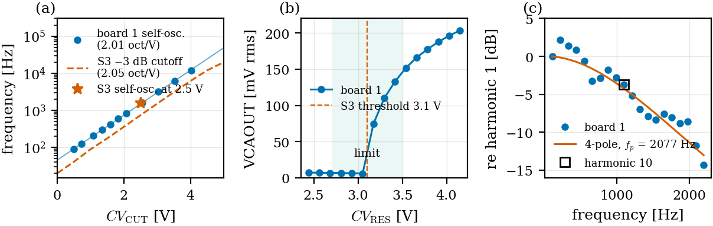
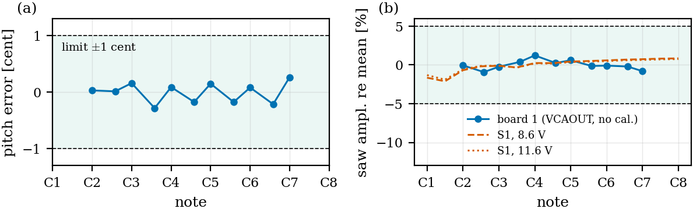
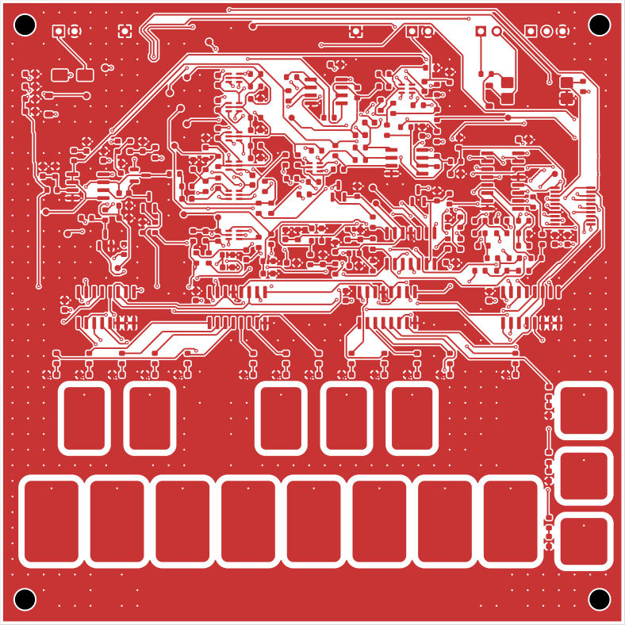
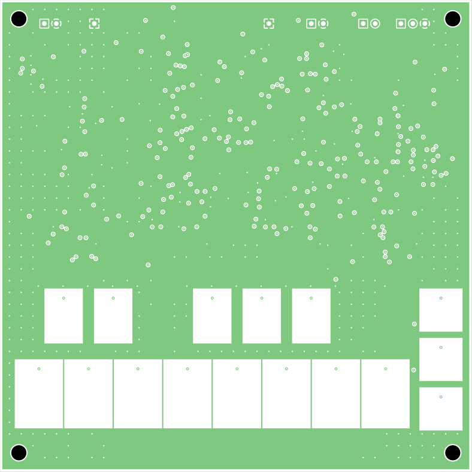
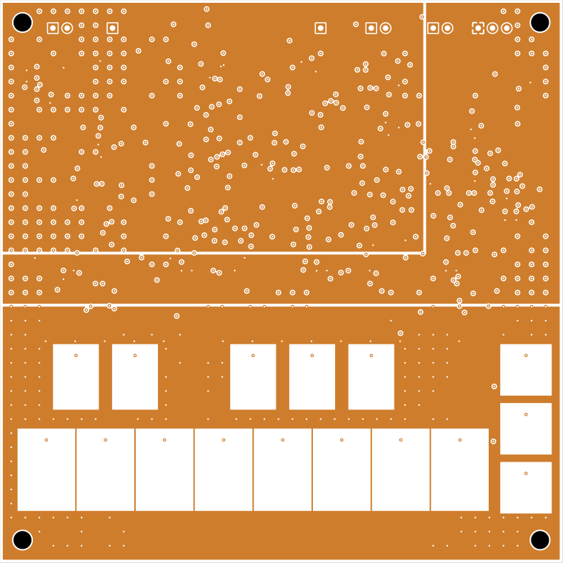
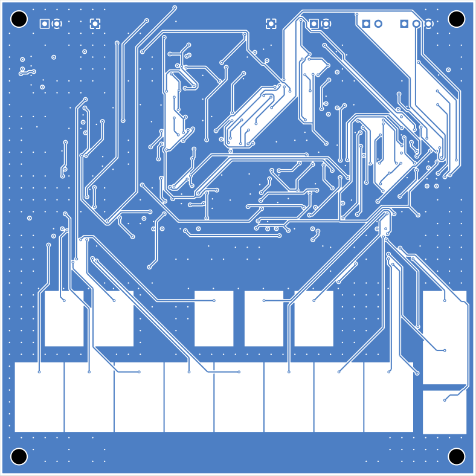

Recorded from the first board
The synth plays one note at a time, so each piece was recorded from the line output one part per take and then mixed. Every piece also exists as a render of the behavioural model. Switch between Board 1 and Model while it plays to compare the two.
A digital brain, an analog voice
The microcontroller produces no audio. It sets the timing of the oscillator and sends four control voltages; the sound itself is made by op-amps and transistors.
amplitude CV
resonance CV
8-bit trim
to the ADC
48 MHz timer for pitch · 4 × 12-bit PWM control voltages · envelopes, LFO, glide, arpeggiator at 1 kHz · 16 touch pads · 16 LEDs
Oscillator
An op-amp integrator ramps up and the MCU timer resets it once per period, so the pitch is as exact as the timer. The charging current follows the pitch, which keeps the saw the same size from C1 to C8.
Filter
A 24 dB/oct ladder of matched transistor pairs with an exponential converter. The resonance goes up to self-oscillation, where the filter sings a sine wave of its own.
Amplifier
A differential-pair VCA. Such a circuit lets a little of the control voltage through as a thump on every note; a small R-2R DAC trims that away, and the firmware can find the setting itself.
Touch keys
Thirteen keys from C to C′ plus SHIFT, − and +, all plain copper pads on the board. SHIFT and a key select what − and + edit; the 16 LEDs show the value.
One clip per feature
Nineteen short clips that take the voice apart: the waveforms, the filter, the envelopes and the modulation. These are renders of the behavioural model, each shown with its waveform and spectrogram. Clips play one after the other.
Simulated first, then measured
Every block was simulated in ngspice before layout, and the board carries a loopback from its output into the MCU's ADC, so it can test itself from a PC. The first board passed all the functional tests that were run (two, touch scan rate and MIDI, were not). One result is marginal: the broadband noise is about −55 dB against a −60 dB target.


Generated from one Python file
The whole design lives in one file of parts, values and nets. Scripts turn it into the simulation netlists, the KiCad schematic, the placed and routed PCB and the fabrication data, so the simulated circuit and the built circuit cannot drift apart. The design was done by cpldcpu together with Claude; the development log records every prompt of those sessions.



